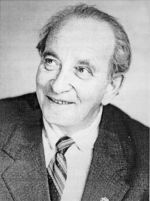

Мирон Маркович Этлис
1929 - 2013
Магадан
Литературный Кисловодск, N34 (2009г.)
ДОЖИТЬ ДО ЛЕТА!
* * *
Провалы памяти моей
Похожи стали на обвалы.
Божусь, твержу себе "ей-ей"
Или "во что бы то не стало!"
И знаю: это не склероз,
Не алкоголь осыпал память.
И не "барбосом среди роз"
Хочу я прошлое представить.
И не желаю, по привычке,
В самокритическом бреду
Свою сомнительную личность,
Как призрак Теркина в аду,
Ославить враз вам на потеху
Как отрицательный пример...
Мне просто стало не до смеха,
Когда уже почти помер.
Слова заветные теряя
И душу обращая в пар,
Я не стучусь в ворота рая,
А просто безнадежно стар.
* * *
Во сне я слышал песню про любовь
И пел ее тебе, моя родная.
И будто бы такие спел любой,
Кто на тебя надеется и знает,
Что ты единственный на свете человек,
Единственная женщина на свете,
Способная в оглохший этот век
Мелодию любви услышать и ответить
Молчанием, улыбкой, всей душой,
Такой знакомой, будто на планете
Все будет очень даже хорошо,
А то что плохо - лучше не заметить.
* * *
Перебирать цепочки совпадений,
Распутывать клубок своей судьбы?
На память узелки вязать ценою бдений
И творческой красивой ворожбы?
Запутаться в сетях ассоциаций?
Случайностей закономерен ход.
Понять его - не стоит и пытаться:
Ведь океан не переходят вброд.
Но старость может лечь свинцовым грузом,
За горизонт событья уводя,
Для тех, кто пережил
закат Советского Союза
И ждал восхода нового вождя,
Сидел, как сыч, на чемодане
В транзитном и холодном Магадане.
* * *
От "достоевщины" спасенья нет,
Когда она в совковом выраженье
Булгаковский нам шлет привет
В обычном площади жилой передвиженье...
Крестьянский бунт
и миллионы шариковых,
Движенье масс и множество культур...
И вот уже нас на углях поджаривают
-Домкомов, ЖЭКов и прокуратур.
В аду таком почти любая женщина,
Себя жалея, вспоминая мать,
В душе становится забитой деревенщиной
И начинает жизнь воспринимать
В регистре дарвинизма социального
И непорядка злостно-коммунального...
Я еле-еле сочинил стишок,
А здесь нужна роман-поэма,
О том, как пережить культурный шок
Не надорвавши нервную систему.
* * *
Нине
Курю за сигаретой сигарету
Всем угрожающим предупрежденьям вопреки,
Предчувствую, что доживу до лета
И до конца растянутой строки
В тебя влюбленного поэта,
Попавшего случайно в старики
И удивленного, что песня не допета,
И умирать пока что не с руки.
* * *
Мне странно, что пришли до пробужденья,
Еще во сне, но будто наяву,
Предутренняя грусть и удивленье,
Что до сих пор мечтаю и живу
Среди зеркал общественного мненья,
Наращивая свой ортобиоз,
Что ощущаю предвесеннее волненье
Сквозь гололедицу и солнечный мороз,
Такой знакомый, радостный и терпкий,
Как снег на сопках и небес голубизна,
Что побывал у "Маски скорби" на поверке
И сознавал - уже видна оттуда, сверху
Чудная Магаданская весна.
* * *
Чтобы открылись горние чертоги
Спокойствия измученной души,
Чтоб отлетели грешные тревоги
И не умолкнуть в северной глуши,
Чтобы пропеть, как завещал Высоцкий,
Его слоган о жизни, пропиши
На стенах магаданских и чукотских:
"Они прошли за так,
на четвертак,
за ради Бога,
В обход и напролом,
и просто пылью по лучу...
К каким порогам приведет дорога?
В какую пропасть
напоследок прокричу?"
Утешься и уймись, найдя дорогу,
Не доверяй рвачу и палачу,
А если вдруг отказывают ноги -
Проследуй просто пылью по лучу.
* * *
Об этом говорят - прозрел.
Но можно проще: успокоился
Или - дошел, перегорел,
Устав от угрызений совести...
Сведи все признаки в синдром,
Собравши качества до кучи,
Пойми, как это все старо:
Себя винить и, болью мучая
За все учтенные грехи,
Писать последние стихи,
Уверовав... на всякий случай...
* * *
Век наехал стеснённо, торосисто,
Громоздя года друг на друга,
Будто тысяча лет проносится,
Да и с временем стало туго.
Напряженье - масштаба планетного.
Дефицит - несмотря на инфляцию.
Каждый день - со своими причудами -
Обращает "эмоцио" в "рацио".
* * *
Тороплюсь осознать скоротечность
Предпоследних минут и часов.
Не пытаюсь прочувствовать вечность,
Замедляя судьбы колесо.
В механизм не подсыплю песочка
Или клеточек стволовых:
Не растянешь последнюю строчку,
Не наследуешь у живых...
ЯНВАРЬ 2008 г.
Новогодняя шутка
Ст. П.
Лишь твоим здоровьем озабочен,
Знаю - без него не выжить нам.
Жертвуя собой и этой ночью,
Не позволив разгуляться вещим снам,
Лучше пребывать в особом оглушеньи
И под непогоду и метели
Сочинить тебе стихотворенье,
Позабыв на время о постели.
Лучше наплевать на гороскопы
И предчувствиям обманчивым назло,
Эту ночь за чтением ухлопать,
чтоб тебе спалось, а нам везло.
Новый год - он даже в старом стиле
Наступил, и нам не миновать
Думать о семье, автомобиле,
Не болеть, не ныть, не унывать.
Литературный Кисловодск, N36 (2010г.)
ПОДАРКИ СВЫШЕ
* * *
Свой номер "Э" и три пятерки
Не забывал полвека,
Как крепостной - рубцы от порки
Или протез - калека.
Мерцало каторжным шитьем,
И нить была хитра,
Клеймо - проклятие моё,
И эти номера.
Боялся в строчку записать
Ярмо позора этого,
Мне шум и зеков голоса
Мешали стать поэтом,
Открытым миру и судьбе
И песни петь готовым,
Чтобы на лагерной божбе
Не замутнилось слово.
1967 г.
1954
Из многих мне навязанных картинок,
Которых не могу забыть, увы,
Есть и один случайный снимок,
Который посмотрите вы,
Чтобы безумство прежней жизни стало явным,
Даже прикинувшись смешным и окаянным.
На пороге комендантского барака,
Там, где плац, покрытый битым шлаком,
Утрамбован тысячами ног,
Где ковровая дорожка за порог
Продолжается в пещеру помещенья,
В глубину, где зекам нет прощенья,
Перед группой бывших доходяг
и новых инвалидов,
И придурков, повидавших "много видов",
Появляется знакомая фигура,
Перекрытая мерлушковой папахой,
Личность, не внушающая страха
Даже тем, кто на плацу нашел окурок,
А тем более у лагерных придурков,
Тех, что накидали здесь окурков,
И которых не смутить и видом бурок,
С отороченным тиснёной кожей фетром
И скрипучих, словно много километров
Они шли по канифольной стёжке,
По ковровой стершейся дорожке...
Это наш начальничек Матвеев,
Ссыльный МВД министр Казахстана.
Говорят, что он гуманен и умнее,
Чем надзора свора и охрана,
Уважает, мол, и немцев, и евреев.
Замирает эта емкая фигура,
Не внушившая придуркам страха.
И зека, кто только что из БУРа
Или лишь вчера стонал и плакал,
Оказавшись у надзора под нажимом,
Чтобы не попасть в Барак
с Усиленным Режимом,
Ну, и пересказывал шутя
Похабщину про несчастных доходяг,
Бывших доходяг,
их большинство на плаце,
Хоть и некому, не время разобраться,
Почему неоднородно большинство,
И понять при этом кто кого
Поимел или хотел иметь,
Если всех их доставала смерть...
На лице бесстыже-малохольном
под папахой
И на шее красной - хоть на плаху -
Отражается навязчиво-невольно
Скрытой под шинелью болью,
Пребыванье в косности и лени:
Он в ГУЛАГе, словно на Святой Елене,
Повторить готов судьбу Наполеона,
Презирая жуткое бессилие закона...
Тут он ударяет по ушам веселой фразой:
- Хватит деток по стенам размазывать -
Вам, трудяги, а лентяям в назидание,
Открываю я для случки дом свиданий...
И, чтоб не мелькали жопой голой,
Занавесочки покрасим реванолом..."
Так ниспослан нам был
кайф для мужика...
Над Экибастузом плыли облака.
Лагеря не стану вам описывать:
Здесь уюта достигал Иван Денисович...
Октябрь 2003 г.
* * *
Мы счастливы, пока наивны,
Пока витаем в облаках,
Не потому, что так невинны
И не испытываем страх
Перед разлукой неизбежной,
Не веря благости творца,
А потому, что наша нежность
Способна длиться без конца...
Она нетленна, как забота
О будущем своих детей,
И эта вечная работа
Главнее страхов и смертей.
1966 г.
* * *
Не заразиться графоманией,
Не изуродовать талант.
Не обольститься равноправием
И не забыть, что дилетант.
21.05.2004
* * *
Нельзя листать в обратном направленьи
Жизнь, дни, как книгу на иврите.
Нельзя мораль извлечь
грядущим поколеньям
И в чем-то упрекнуть и укорить их.
Так и себя, бредущего к закату,
Прожившего крикливо и печально,
Нельзя толкать на исповедь-расплату
И налегать на изначальность.
От заднего ума одна лишь горечь,
Пыль наподобье тлена...
Звонок звенит. И толку нет в укоре.
Пусть. Вот она - finita - перемена.
Достоинство? Успех? Признанье? Слава?
Все это хорошо в грядущем,
в отдаленье.
И над собой последняя расправа
Лишь частный случай в этом поколеньи...
* * *
Самая длинная ночь этой осени
После тревожного дня.
Будто меня, как младенца,
подбросили,
а чужие -
не подобрали меня.
1996 г.
* * *
На кресле отвалясь, гляжу на потолок,
Где на задор воображенью...
Паук козявку паутиной обволок
И приступил к ее съеденью.
Как зрение моё остро в очках!
Как мощен дух натурализма!
Паук козявку обращает в прах,
А я слагаю гимны жизни...
05.01.2005
* * *
Хочу дружить и тихо жить
И чтоб меня любили,
Чтоб не было обид и лжи
В обычном пошлом стиле.
Чтоб мир уютных мелочей
Мне не грозил удушьем
И не было пустых речей,
Уродующих душу...
20.01.2005
УМИРАЮЩИЙ КЛОУН
Шатер упал - подпилен шест,
Упорно много лет
поддерживавший купол...
Я умираю. Мой последний жест:
Вот эта - на бумаге - кровью -
глупость...
Дыханье ветра шевелит полы,
Упавший полог горбится шалаво...
Я умираю. И творю хулы
Обманному бессмертью
глупой славы.
Где был очаг - остался силуэт,
Окружность обожженности
и кратер...
Я умираю. Четки глупых лет
Перебираю и творю
проклятья...
* * *
Умных слов вереницы
Любовь рассказать не могут.
Любовь - она как жар-птица
Или подарок Бога.
Нам под утро не спится.
Вы не судите строго...
Кровь - она не водица
И тоже - подарок Бога.
Смерть должна отделиться,
Исчезнуть должна тревога.
Мы будем любить и молиться,
Прощенья просить у Бога.
Любовь наша как молитва -
В ней нет упреков и лжи.
Жизнь наша стала битвой
За нашу любовь и за жизнь.
25.01.2005
Литературный Кисловодск, N37-38 (2010г.)
ЗАПРЕДЕЛЬНОЕ
* * *
Прощаясь с прошлым -
будущему верь!
Слова нужны для боли и заклятья.
Друзья нужны для будущих потерь
На выставке поношенного платья.
Цинизма мгла застлала горизонт.
Наш кругозор -
столбцов газетных тени.
У каждого - свой,
свой проклятый фронт.
У каждого - свое, свое спасенье.
И ночь придет - она придет ко всем:
Ночь смерти, смерча,
пагубы, расплаты -
Лишь бликом крови на ее косе
Останется и этот миг проклятый.
Он не принес презрения основ
И не унес слепого всепрозренья.
Ложится сажа на мое окно.
Ложится миг - мое стихотворенье.
Рвет боль и стыд
канву отживших слов.
Походка века - ложь и спотыканье.
Как далеко и мрачно увело
Нас маяков обманчивых мерцанье.
И только спасся юноша один:
Он шел случайным,
ярким бездорожьем
До солнца, до отчаянья, до седин -
Наедине с доверьем тонкокожим.
Декабрь 1963 г.
* * *
Душа - как сито, мозги - как вата.
Божба до чертиков довела.
Но умирать нам рановато -
"Есть у нас еще дома дела".
Пусть дети хнычут, а жены плачут.
Слеза тягучая, как смола.
На все удары даем мы сдачу -
Раз есть у нас еще дома дела.
Сильны утратами и жизнелюбием,
И всем, что родина нам дала.
Своё отечество не погубим мы,
И есть у нас еще дома дела!
Не разменялись мы на пародии,
На пляски дикие вокруг стола,
На все, что "кое-как"
или "так, вроде бы" -
Есть у нас поважнее дела.
Пусть рвутся струны, поются песни.
И накаляются добела:
Ведь чем труднее, тем интереснее -
И тем удачнее пойдут дела.
13-14 января 2010 г.
г. Магадан
Литературный Кисловодск, N41 (2011г.)
ЖИВАЯ ПАМЯТЬ
* * *
На магаданьи все могилы братские.
Сроднила нас холодная колымская земля,
Пронзенная указами, указками
До этих сопок от московского кремля.
Нас породнили недра и туманы,
Сплотил и подытожил рабский труд,
И "Маска скорби", бренд для Магадана,
Взросла из горя и подземных руд,
Которые сокрыты, но добыты,
Как говорится - нагора.
Легендами мы все по горло сыты.
Тасуют их по новой фраера,
Которые дорвались до наживы.
Братаемся мы из последних сил,
Пока святою памятью мы живы,
Чтоб чистоган свечу не погасил.
* * *
Живая память наизнанку вывернута,
Запутался, что далеко, что близко...
Мерещится, что далеко до вылета
И время есть гулять по Сан-Франциско.
Еще вчера -
простой советский подданный -
Был рядом с дочерью
среди родных и близких,
Осматривал музей-усадьбу Джека Лондона,
Вникал в его дела и переписку...
Еще вчера в местечке Санта-Роза
Для внучки Нины покупал
лягушку надувную,
Не сознавая уличенным быть угрозы
И, как всегда, лукавя и рискуя...
Живая память не окостенела,
Из прошлого не вычеркнула выверт
И сохранила до возможного предела,
Как и прожженную кепчонку "Раша Ривер"
09.11.2010
* * *
Благодарю еврейских предков и Россию
За долгожительство печальное мое,
За неизбывную тоску душевной энтропии
И жизнь в колымском золотом краю.
И если верят все, что верят в бога,
То я, как все, на том стою,
Себя не порицая слишком строго,
Что жил в колымском каторжном краю.
* * *
Прожив случайно восемьдесят лет,
Дожив до новой переписи населения,
Став представителем "натуры уходящей",
Так сложно оставаться в настоящем,
Если к тому же ты почти поэт.
Реальность расплывается пятном
Избыточных оттенков и теней,
Подобно цифрам из итогов спортлото
И образам давно минувших дней...
Но строки эти вовсе не о том.
Хотелось бы судить и "обобщать" -
Нам это право опытом дано, -
Себе и близким многое прощать,
Не потому, что сердцу все равно...
Не от расслабленности плача и крича.
7 ноября 2010 г.
* * *
Злой рок, увы, не выдумка глупцов,
И это видно вообще и на примере,
Достаточно взглянуть в лицо,
Когда оно озарено доверьем.
Кто был и остается до кончины
Пассивной жертвой
собственной невзгоды,
Тот не узнает подлинных причин
Того, как прожил эти проклятые годы.
Что проклят кем-то день,
в который был зачат,
И час, когда ему пришлось родиться,
Что до сих пор проклятье это длится,
Его до самой смерти волоча.
* * *
Ум истощился и усох
В мочалки капилляров,
И покатилось колесо -
Настала старость.
Душа, как гаснущий экран,
Проваливается и зияет.
Пришла пора последних ран
И снегового первомая.
Болею. Истощен и сер,
Но жив и даже как-то весел,
И предстаю во всей красе
Обрывков фраз и теней песен.
1 мая 2010 г.
* * *
Став старым, не впадаю в детство:
К нему спускаюсь по ступеням лет
И нахожу отцовское наследство
И матери неугасимый свет.
Ноябрь 2010 г.
Литературный Кисловодск, N43 (2011г.)
БЫЛА ТАКАЯ ЖИЗНЬ
* * *
Год юбилеев-фестивалей
То Чехова, то Бродского
Пытался отравить державный Сталин
Маразмами и памятью господскою.
И обратить наш дух в пустыню плоскую,
Наполненную полумертвыми людьми
И миражами одичания уродского
На множестве каналов СМИ.
В годину памяти трагических утрат,
Страстей нешуточных,
предательств и амбиций,
И симулякров, ставших в ряд
Пропагандистских шутовских событий,
На фоне разрешительной свободы
Звучит на барабан натянутая шкура -
Любимая до слез литература...
* * *
Вырываясь из самовлюбленности сетей,
Посмертной участью
пренебреги беспечно.
Ты не герой некрологических статей.
И не грозят тебе забвение и вечность.
12-13.11.2010
Литературный Кисловодск, N44-45 (2012г.)
МАГАДАНСКОЕ ЛЕТО
* * *
Теряю дни и забываю даты
И от погод, и от болезни.
Постель причудливо помята,
Творить порядок бесполезно.
Лишь доктора разнообразят
Наплыв безжалостной рутины,
И в каждом звуке, каждой фразе
Парит мотив болотной тины.
И это несмотря на море,
Которое здесь рядом - близко.
Никак тоску не переспорить,
Как в лагере без переписки.
Август 2011 г.
* * *
Преодолеть барьер пятичасовый,
Переступить чрез пять часов утра,
Чтоб как-то день освоить новый,
Пока не наступила та пора,
Которую мы здесь считаем летом.
Что вижу из окна больницы,
Туманами прикрытое с рассвета,
Где время больно тянется и длится,
Где книга упадает со стола
Из рук, её держать уставших,
И вяло тянутся мои лечебные дела,
И с болью новый день
становится вчерашним.
Август 2011 г.
* * *
Я не стремился к пенсии и смерти
(Или не мог стремленье осознать).
Мне не морочили сознанье черти,
Не мучила потребность выйти в знать
Или хотя бы чуть обогатиться,
Подмять кого-то под себя...
Пора понять, что стоит обходиться
Без радости, страдая и любя.
28 августа 2011 г.
* * *
Не свершился мой склероз сердечный -
Был намёк, похожий на дефолт.
Случай подтвердил мою беспечность
И характера дурного произвол.
Видно, зря судьба мне намекнула
На утраченный ортобиоз;
Мол, не зря ты сделался сутулым
И легко заводишься до слёз.
Вот пришла расплата за наивность,
Поздно клюнул жареный петух,
Потерял в пути былую живость,
Выдохся воинствующий дух.
Август 2011 г.
* * *
Живут воспоминания
В пугливой глубине
Бессонного сознания
На неспокойном дне.
И нужен легкий повод,
Как дуновенье - пух,
Чтобы проснулся снова
Со дна идущий звук,
Чтобы дурные годы,
Как небыли, ушли,
Чтоб счастье и свобода
К нам заново пришли.
* * *
Не нашлось достойных наставников.
Был посажен возможный тьютэр,
Кто не сел - укрылись за ставнями...
Еще не был в ходу компьютер.
Сам себе предоставленный смолоду
На дороге проб и ошибок,
Обречен был книжному голоду,
Оставался в плену перегибов...
* * *
Кто сгубил жизнелюба Осю,
А меня на земле оставил?..
Марина Цветаева.
Ни во времени, ни в пространстве
Нет подмен и взаимозамены.
В этом проклятом постоянстве
Заморожены графики смены
Отмирающих поколений,
Гениальностей и преступлений.
Лишь в стихах и другом писательстве
Допустимы отступления,
Деформации, чудеса,
Безразмерные искривления,
Перекрёстные голоса,
Бесконечные панорамы
И бессмертие Мандельштама.
22 августа 2011 г.
* * *
При выходе за зону
Переключение скоростей -
Причина паники, и страха, и смертей...
Одежда по сезону
И доброта отчаявшихся жён
Спасала когда-то многих,
Кто был упорством заряжен
И смело вставал на ноги...
1 сентября 2011 г.
* * *
Поздно становиться эготистом.
Хватит и того, что эгоист.
Поздно обернуться аферистом -
Радуюсь, что чуточку артист.
* * *
Уходит северное лето,
Даря последнее тепло.
И снова песня не допета:
Не сказано, не повезло.
Июль 2011 г.
Литературный Кисловодск, N46 (2012г.)
ГДЕ МОИ СЕМНАДЦАТЬ ЛЕТ?..
* * *
Невольник строк, я выражаю безотчетно
Все, что случилось на моем веку,
Набор случайностей залетных
Пронзает током каждую строку
Словами, сбившимися плотно
Как ствол, приставленный к виску,
Как шрам, оставшийся от плетки,
Иль звуки песен на слуху.
* * *
Попал в вагон для некурящих,
В косноязычную и пеструю элиту.
Не просветить мне этот черный ящик,
Не стать всепонимающим
и слишком сытым.
Успешных лиц лукавый ареал,
Где чуждые мелькают тени,
Не достигает слуха моего.
Не внемлю голосам грядущих поколений.
* * *
Ночные бденья трудовые,
Свои заветнейшие сны
Я посвятил тебе, Россия...
И, в ожидании весны,
Погод нормальных и сердечных,
Укорам совести назло,
Забывши жизни скоротечность,
Я думаю - мне повезло.
Хочу, обиды презирая,
Последних сил не загубя,
Не ради вечности и рая -
Хоть что-то сделать для тебя.
25.02.08
* * *
Сданы в архив дела и переписка
Срок давности уже определен.
Стихи пока что исключил из списка,
И, если надо, будет срок продлен.
Я дела этого не перестал стесняться -
Мне по здоровью не до тонких чувств.
Процентов сорок книг и дел
пошли в утилизацию,
От книжной и архивной пыли всё лечусь...
Библиотека чудом не попала
Под учиненный надо мной разор:
Процентов пятьдесят раздал кому попало.
А виноватых ждет еще особый разговор.
Остался, как всегда,
наедине с проблемой -
Как дальше жить и не работать как?
Но это ведь отдельная и трудная поэма:
Сам виноват, если попал впросак.
* * *
Слова - огонь.
Огонь огнеопасен.
Его не тронь...
Других не надо басен!..
Бумагоборец,
он же графоман шкодливый,
Был человек советского разлива,
Бумаге объявив войну на истребленье,
Он истощал себя стихосложеньем,
Не веря, что найдет его читатель,
Бумажки с опусами в подземелье прячет,
И делает он это не случайно -
Убежище трусливой совести есть тайна...
* * *
Мне не нужны советчики и критики,
И поздно их посылы принимать,
Прямить свою духовную политику
И векторы привычные ломать.
Конец так близок, сколько ни тяни.
И Магадан - моя последняя тюрьма.
Хочу дожить в живительной тени:
Сиё понять хватает своего ума.
* * *
Как подиум для цирковой отваги
И для спортсмена классный стадион,
Так для поэта чистый лист бумаги,
Когда он ночью вдруг теряет сон
И, верный музе как присяге,
Мелодии душевной в унисон,
Глотает слов отравленные шпаги
И около стола садится без кальсон,
Доказывая, не теряя юмор,
Что он пока еще не умер.
* * *
Не славы я искал у трона,
А средства пропитания.
Не строил дачные хоромы
Для обитания.
Жил как умел и как попроще я
И по ночам сберкнижек не считал,
Довольствуясь умеренной жилплощадью,
Чтил как святыню марксов "Капитал"
От одурелой скромности не умер я,
Разменивая бытие на быт,
Лишь задыхался в культовом безумии
И был случайно не убит.
* * *
Готовлюсь умереть своею смертью я,
Чтоб избежать смертельного насилия.
Не сочиняю сказок о бессмертии,
Не пью отравы - кубка изобилия.
Не плачу, не впадаю в детство.
Не утомляю Бога покаянием
И не делю заранее наследства.
И близких не пугаю расставанием.
Лишь изредка показываю дулю
Тем, кто готовил мне шальную пулю.
Не обману себя словцом лукавым,
Ортобиозом и другими удлинителями,
Включая посулы
посмертной памяти и славы
И веру возвращенья к прародителям.
Плыву по воле волн или стихий,
А по ночам слагаю
предпоследние стихи.
Литературный Кисловодск, N54 (2014г.)
ИЗ КНИГИ СТИХОТВОРЕНИЙ "КРОВЯНОЕ ДАВЛЕНИЕ"
* * *
Вдруг на меня упал фантом
душевной боли,
Как на кого-то с верхней полки
падает протез.
Я сердце обложил
мешками горькой соли,
Чтоб с ним наедине остаться без
Напряга оскудевшей силы воли,
Претензий к обществу,
к подругам и судьбе,
Без сладкой участи купаться в алкоголе
И умирать, играя на трубе.
21.08.08
* * *
Повседневность меня не душит,
И пространство не смеет мешать
Пульс мерцающий чутко слушать,
Как он скачет, в ушах шурша.
Затянулось земное время,
Затянулось как млечный путь.
И живется мне вместе со всеми,
Как положено, как-нибудь.
Распластался уютный фатум,
Обволок нищетою щедрот,
Как надежда на мирный атом,
Как зарплата и кризисный год.
И что бы еще ни случилось
(А пока ничего не случилось),
Есть надежда на божью милость,
Есть надежда...
15.03.09
* * *
Когда генетика командует "Умри!"
И бьет командой в жизни корни,
Я остаюсь с часами до зари
И убеждаю их, как следует, запомнить,
Что срок их остановки предрешен
Не хитростями генов и генетик,
Что ждут меня дела,
и путь не завершен.
И пусть я не один такой на свете,
Который задержаться бы хотел
Среди травы и злоключений,
Среди белковых бестолковых тел
На выходе из прошлого, как тени
Того, что надо заново прожить,
Того, что без меня не обойдется...
Пытаюсь над часами ворожить,
А времени все меньше остается.
13.02.05
* * *
Он правде заглянул в лицо и ужаснулся:
У правды почему-то не было лица...
Смущенный взор как в бездну окунулся:
У этой бездны не было конца,
И также не было законного начала
И отблеска в неё нырнувших глаз,
Которых пустота не замечала,
А только отражала напоказ.
И было безнадежным Зазеркалье -
Убежище для множества Алис -
Мерцая перламутром или сталью,
Соединяя болью верх и низ.
Такая правда только ослепляла,
Куда-то за собой, в себя звала,
Опутывая паутиной и печалью...
Такие вот правдивые дела...
10.03.08
СОНЕТ
Уже мне не грозит уход насильный:
Не утоплюсь и рук не наложу,
Не задохнусь в какой-нибудь красильне
От едких запахов, и ног не застужу,
И вместе с ними от морозной хмари
Дыхательных путей не обожгу.
Не выстрелит из-за угла наемник,
и его товарищ
Не обречет мой труп валяться на снегу.
С удавкою на одряхлевшей шее,
Не прыгну из открытого окна,
И заживо не задохнусь
под трупами в траншее...
Умру как большинство,
не исчерпав до дна.
Свою судьбу и жизненную силу,
И лягу, как в постель, в холодную могилу.
15.03.08
* * *
Вдыхая ароматы ярких роз
И ветра ласковые дуновенья,
Мы не поймём чумы экологических угроз
За шорами чудесного мгновенья.
Мы устремляем взоры на Восток,
Но нас уверенно затягивает Запад.
Весь мир асимметричен и жесток,
Его не различить на вкус, на запах.
И мы рисуем бледный силуэт
На розовеющем закате счастья,
Как то, что назовет иной поэт
Предчувствием угрозы и напасти...
Грядущее ведь всё равно
решительно грядет
В непредсказуемом,
неотвратимом виде,
А солнце все равно взойдет,
За настоящее пред будущим в обиде.
08.03.08
Литературный Кисловодск, N55 (2014г.)
* * *
Всех слишком сытых не люблю
Когда они гужуются от пуза,
Но и аскетов модерновых не хвалю
За склонность к бунту и сомнительным союзам.
* * *
Восходит долгожданный век
На утренней заре тысячелетия.
Он всех голодных и калек
Как будто бы учел и держит на примете.
Неужто новый век такой же для людей,
Как прошлые с их кровью и злодейством,
Лелеет новые элиты и вождей
И обожает лицедейство?..
10.03.08
* * *
Не промолчу о сокровенном,
Храня «сокровища души»,
Цедя «прекрасные мгновенья»
(Ты их, попробуй, опиши!).
Хотелось быть полезным людям,
Чужих и ближних возлюбя,
Чтобы сказали: «Не забудем.
Ты часто забывал себя
И был простой и честный малый,
А если чем и согрешил,
То мы, когда тебя не стало,
Тебя прощаем от души».
04.02.08
Литературный Кисловодск, N56 (2015г.)
* * *
Куда деваться бедному еврею,
Блуждающих отведовшему звёзд,
Когда душою чуткой не старея,
Уже инфаркт второй он перенёс?
Упасть на дно нирваны до ухода
В давно ему желанный мир иной?..
Но как расстаться со свободой?..
2007 г.
* * *
Учусь любить своих врагов и наших
Не потому, что так велит Христос,
Протягивая руку низко павшим,
И всех целуя,) всех любя до слез...
Нет! поступаю так я потому,
Что не желаю быть политкорретным,
Что отдаю признание их горю и уму...
И продаю сукно в ряду Каретном...
14 февраля 2008 г.
* * *
Я поднимаю тост за тех в подлунном мире,
Кто удостоин чести быть врагом,
И не желаю их мочить в сортире,
И не считаю, что они меня и всех безгрешных окружили
И только ждут - когда мы упадем.
И окалеем в алявашном стиле,
Ко всем чертям отчаянно пойдем
За то, что их гламурный стиль мы не взлюбили.
февраль 2008 г.
Литературный Кисловодск, N58 (2015г.)
ЕСТЬ НАДЕЖДА
* * *
Много строчек, многоточий,
Междометий и красот -
Он строитель, он рабочий,
Как высотник - без высот.
* * *
Когда профессия - наука,
А прочий мир духовных благ
Ученому внушает скуку -
Над жизнью вьется черный флаг.
И черная свеча сгорает
В бескислородной духоте,
И ходят умники по краю,
И подвисают в пустоте,
И мечется элита нации
В припадке специализации,
И погибает ни за грош.
Ну, а за ними - молодежь,
Попав на удочку удачи,
Решает "узкие" задачи...
06.01.2005
* * *
Вечерний час, беседы и окурки
От выкуренных вместе сигарет,
Мы, не бичи и не придурки,
Здоровье сохранив под старость лет,
Как дети - не умеем, не умнеем...
И все равно, как дети, не стареем...
19.01.2005
* * *
Меня обступили люди,
От которых очень устал:
Так обидчив и безрассуден
"Человеческий капитал"!..
Меня обступили книги,
Которые не дочитал...
Упреки, обиды, интриги...
Боже, как я устал!
Усталость - она как личина,
Которую надо избыть.
Живу я, и рядом Нина,
Поэтому надо быть
Уверенным и спокойным,
Нашей любви достойным.
* * *
Как отличить молитву от мольбы?
Как вздох от стона, или по-другому?
В мольбе - обиды на излом судьбы,
Страх перед ужасом разгрома и погрома.
Я о любви взаимной не молю.
Я Ниночку молитвенно люблю.
25.01.2005

Давид Райзман. Тот самый Этлис (статья в "Литературном Кисловодске", N68)
Игорь Дадашев. Динозавры - дети мои! (Рассказ о Мироне Этлисе; "Литературный Кисловодск", N81)
Страница "Литературного Кисловодска"
Страницы авторов "Литературного Кисловодска"
Последнее изменение страницы 30 Jul 2023
ПОДЕЛИТЬСЯ: